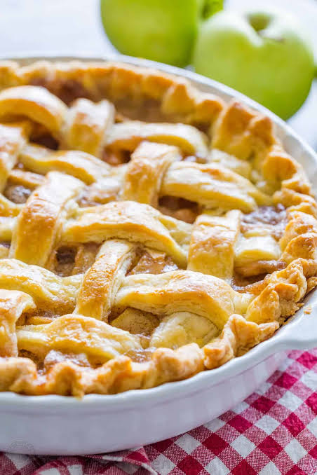

Apple pie

DESCRIPTION
Apple pie is a classic dessert with a pastry crust filled with sweetened,
spiced apples, often served with ice cream, whipped cream or custard.
Ingredients
- Apples
- Butter
- Flour
- Sugars(A blend of white and brown sugar)
- Pie crust
Steps
- Make the filling:On the stove, make a paste with flour and Butter.
Add the sugar and water and bring to boil. Simmer, then remove from heat.
- Assemble the pie:Press one crust into a pie plate.
Place the sliced apples on the bottom crust. Use the top crust to make a lattice crust
according to the recipe below. Pour the butter-sugar mixture over the lattice crust.
- Bake the pie:Bake the pie in a preheated oven until the apples are soft
and the crust is golden brown.
Home